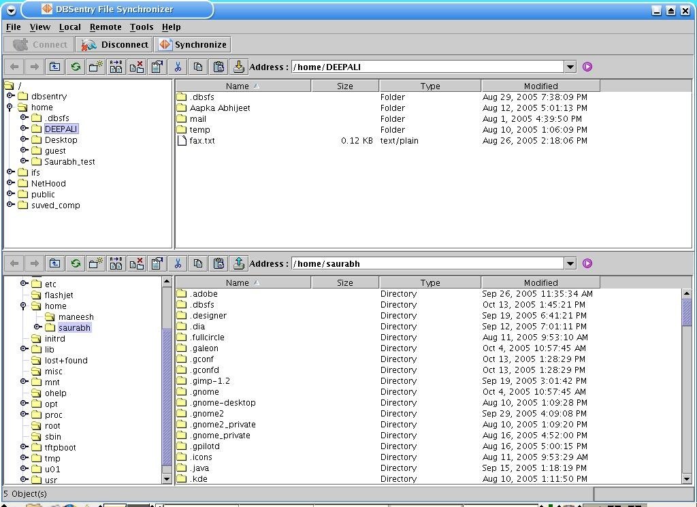
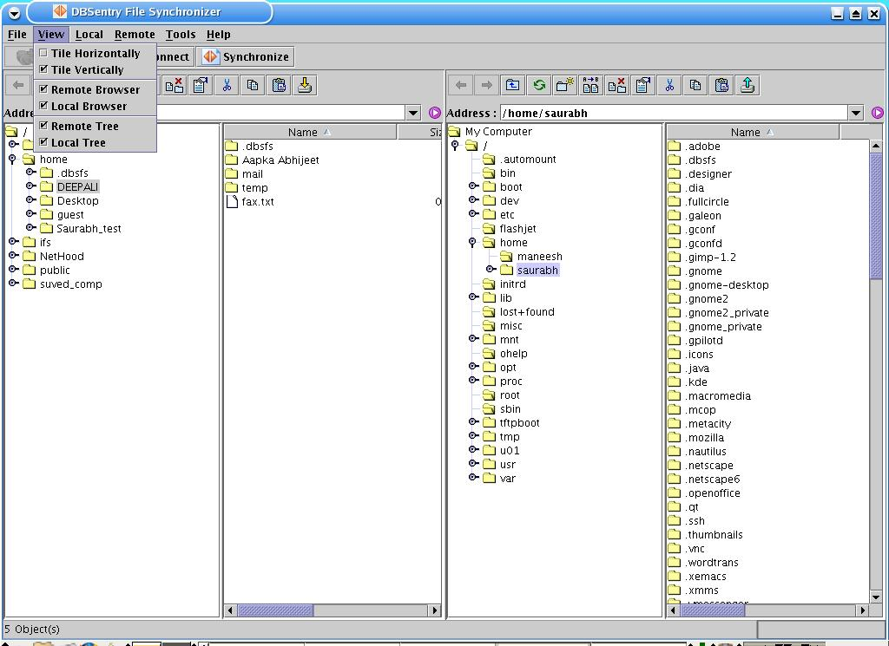

Changing visual preferences includes Arranging Remote and local browsers vertically or horizontally,controlling visibility of browsers as well as navigation panels within browsers.
Tile browsers horizontally:
Select View->Tile Horizontally menu option at FileSync startup window.Check the 'Tile Horizontally' menu option to tile the brwosers horizontally

Tile browsers vertically:
Select View->Tile Vertically menu option at FileSync startup window.Check the 'Tile Vertically' menu option to tile the brwosers vertically
